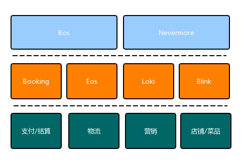

重构：改善饿了么交易系统的设计思路

文 | 盛赫
叮~,您有新的饿了么订单，正在阿里云上被接单。
这篇文章成型于交易系统重构一期之后，主要是反思其过程中做决策的思路，我没有使用「架构」这个词语，是因为它给人的感受充满权利和神秘感，谈论「架构」让人有一种正在进行责任重大的决策或者深度技术分析的感觉。
如毕玄在系统设计的套路这篇文章里所提：
回顾了下自己做过的几个系统的设计，发现现在自己在做系统设计的时候确实是会按照一个套路去做，这个套路就是：系统设计的目的->系统设计的目标->围绕目标的核心设计->围绕核心设计形成的设计原则->各子系统，模块的详细设计
在进行系统设计时，摸清楚目的，并形成可衡量的目标是第一步。
"Soft" ware
Software 拆开来分别是 soft ware ，即灵活的产品。 -- 鲍勃大叔
重构前的交易系统第一版的代码可以追溯到 8 年前，这期间也经历过拆解重构，17 年我来到时，主要系统是这样：


这套系统驮着业务从百万级订单跑到了千万级订单，从压测表现来看，它可以再支撑业务多翻几倍的量，也就是说如果没有啥变化，它可以继续稳定运行着，但如果发生点变化呢，答案可能就不这么肯定了。
在我入职的这两年里，系统承载的业务迭增变化：从单一的餐饮外卖到与新零售及品牌餐饮三方并行，又从到家模式衍生至到店，随之而来的是业务持续不断的差异化定制，还有并行上线的要求。另一面，随着公司组织架构变化，有的项目需要三地协同推进才能完成，沟通协作成本翻倍提升。几方面结合起来，导致开发没有精力对大部分系统的演进都进行完善的规划。
几个月前，业务提了一个简单的需求：对交易的评价做自动审核并进行相应的处罚。当时评价核心“域模型”是这样的：

设计自身的优劣这里暂不进行讨论，只是举例说明为了满足这个诉求，会涉及多个评价子模块要改动，开发评估下来的工作量远远超出了预期，业务方对此不满意，类似的冲突在其他系统里也经常出现。但实际上，团队里没人偷懒，和之前一样努力工作，只是不管投入了多少个人时间，救了多少次火，加了多少次班，产出始终上不去，因为开发大部分时间都在系统的修修补补上，而不是真正完成实际的新功能，一直在拆东墙补西墙，周而往复。
为什么会导致这样的结果，我想应该是因为大部分系统已经演变到很难响应需求的变更了，业务认为的小小变更，对开发来说都是系统的一次大手术，但系统本不应该往这个方向发展的，它和 hardware 有着巨大的区别就在于：变更对软件来说应该是简单灵活的。
所以我们思考设计的核心目标：“采用好的软件架构来节省项目构建和维护的人力成本，让每一次变更都短小简单，易于实施，并且避免缺陷，用最小的成本，最大程度地满足功能性和灵活性的要求”。
Source code is the design
提到软件设计，大家脑袋里可能会想到一幅幅结构清晰的架构图，认为关于软件架构的所有奥秘都隐藏在图里了，但经历过一些项目后发现，这往往是不够的。Jack Reeves 在 1992 年发表了一篇论文《源代码即设计》，他在文中提出一个观点：
高层结构的设计不是完整的软件设计，它只是细节设计的一个结构框架。在严格地验证高层设计方面，我们的能力是非常有限的。详细设计最终会对高层设计造成的影响至少和其他的因素一样多（或者应该允许这种影响）。对设计的各个方面进行改进，是一个应该贯穿整个设计周期的过程。
在踩过一些坑之后，这种强调详细设计重要性的观点在我看来很实在接地气，简单来说：“自顶向下的设计通常是不靠谱的，编码即是设计过程的一部分”，个人认为：系统设计应该是从下到上，随着抽象层次的提升，不断演化而得到良好的高层设计。
编程范式
从下向上，那就应该从编码开始审视，饿了么交易系统最开始是由 Python 编写， Python 足够灵活，可以非常快速的产出 mvp 的系统版本，这也和当时的公司发展状态相关: 产品迭代迅速，新项目的压力很大。
最近这次重构，顺应集团趋势，我们使用 Java 来进行编写，不过在这之前有一个小插曲：17 年底，因为预估到当前系统框架在单量到达下一个量级时会遇到瓶颈，所以针对一些新业务逐渐开始使用 Go 语言编写，但在这个过程里，经常会听到一些言论：用 Go 来写业务不舒服。为什么会不舒服？大致是因为没有框架，没有泛型，没有 try catch ，确实，在解决业务问题的这个大的上下文中， Go 语言不是最优的选择，但语法简单，可以极大程度的避免普通程序员出错的概率。
那么 Python 呢，任何事物都有双刃剑，虽然 Python 具有强表达力，但是灵活性也把很多人惯坏了，代码写的糙，动态语言写太多坑也多，容易出错，在大项目上的工程管理和维护上有一定劣势，所以 rails 作者提到：“灵活性被过分高估——约束才是解放”也有一定道理。
为避免引起语言战，这里不过多讨论，只是想引出：我从 C++ 写到 Go ，又从 Python 写到 Java ，在这个过程里体会到--编程范式也许是学习任何一门编程语言时要理解的最重要的术语，简单来说它是程序员看待程序应该具有的观点，但却容易被忽视。交易老系统的代码，不管是针对什么业务逻辑，几乎都是OPP一杆到底，类似的代码在系统里随处可见。
我们好像完全遗忘了 OOP ，这项古老的技艺被淡化了，我这里不是说一定要 OOP 就是完美的，准确来说我是“面向问题”范式的拥趸者，比如， Java从骨子里就是要 OOP ，但是业务流程不一定需要 OOP 。一些交易业务就是第一步怎么样，第二步怎么样，采取 OPP 的范式就是好的解法。这时，弄很复杂的类设计有时并不必要，反而还会带来麻烦。
此外，同一个问题还可以拆解为不同的层次，不同的层次可以使用各自适合的方式。比如高层的可以 OOP ，具体到某个执行逻辑里可以用 FP ，比如：针对订单的金额计算，我们用 Go 写了一版FP的底层计算服务，性能高、语法简单以及出错少等是语言附带的优点，核心还是因为该类问题自身适合。
然而，当面向整个交易领域时，针对繁复多样的业务场景，合理运用 OOP 的设计思想已经被证明确实可以支撑起复杂庞大的软件设计，所以我们作出第一个决策：采用以 OOP 为主的“混合”范式。
原则和模式
The difference between a bad programmer and a good one is whether he considers his code or hisdata structures more important. Bad programmers worry about the code. Good programmers worry about data structures and their relationships. -- Linus Torvalds
不管是采用哪种编程范式、编程语言，构造出来的基础模块就像盖楼的砖头，如果砖头质量不好，最终大楼也不会牢固，引用里的一大段话， relationships 才是我最想强调的：我理解它是指类之间的交互关系，“关系”的好坏通常等价于软件设计的优劣，设计不好的软件结构大都有些共同特征：
采取合适的范式后，我们需要向上抽一个层次，来关注代码之上的逻辑，多年软件工程的发展沉淀下来了一些基本原则和模式，并被证明可以指导我们如何把数据和函数封装起来，然后再把它们组织起来成为程序。
SOLID
有人将这些原则重新排列下顺序，将首字母组成 SOLID ，分别是：SRP、OCP、LSP、ISP、DIP。这里针对其中几个原则来举些例子。
SRP（单一职责）：这个原则很简单，即任何一个软件模块都应该只对一类用户负责，所以代码和数据应该因为和某一类用户关系紧密而被组织到一起。实际上我们大部分的工作就是在发现职责，然后拆开他们。
我认为该原则的核心在于用户的定义，18 年去听 Qcon 时，听到俞军的分享，其中一段正好可以拿来诠释什么是用户，俞军说：“用户不是人，是需求的集合”。在我们重构的过程中，曾经对交易系统里的交付环节有过争论，目前饿了么支持商家自配和平台托管以及选择配送（比如跑腿），这几类配送的算价方式，配送逻辑，和使用场景都不一样，所以我们基于此做了拆解，一开始大家都认同这种分解方式。
但后来商户群体调整了，新零售商户和餐饮商户进行分拆，对应着业务方的运营方式也开始出现差异，导致在每个配送方式下也有了不同诉求，伴随这些变化，最后我们选择做了第二次拆解。
对于单一职责，这里有个小 tips ：大家如果实在不好分析的话，可以多观察那些因为分支合并而产生冲突的代码，因为这很可能是因为针对不同需求，大家同时改了同一个模块。
DIP（依赖倒置）：有人说依赖反转是 OOP 和 OPP 的分水岭，因为在过程化设计里所创建的依赖关系，策略是依赖于细节的--也就是高层依赖于底层，但这通常会让策略因为细节改变而受到影响，举个例子：在外卖场景下，一旦用户因为某些原因收不到餐了，商户会赔代金券安抚用户，此时 OPP 可以这样做：

而过一阵子，因为代金券通常不能跨店使用，平台想让用户继续复购，就想通过赔付通用红包来挽留，这个时候就需要改动老的代码，通过增加对红包赔付逻辑的依赖，才可以来满足诉求。
但如果换个方式，采用 DIP 的话，问题也许可以被更优雅的解决了：

当然这个示例是简化后的版本，实际工作里还有很多更加复杂的场景存在，但本质都是一样：采用 OOP 倒置了策略对细节的依赖，使细节依赖于抽象，并且常常是客户拥有服务接口，这个过程中的核心是需要我们做好抽象。
OCP（开闭原则）：如果仔细分析，会发现这个原则其实是我们一开始定的系统设计的目标，也是其他原则最终想达成的目的，比如：通过 SRP ，把每个业务线的模块拆解出来，将变动隔离，但是平台还要做一定的抽象，将核心业务流程沉淀下来，并开放出去每个业务线自己定义，这时候就又会应用到 DIP 。
其他的几个原则就不举例子了，当然除了 SOLID ，还有其他类型的原则，比如 IoC ：用外卖交易平台举例子，商户向用户卖饭，一手交钱一手交货，所以，基本上来说用户和商户必需强耦合（必需见面）。这个时候，饿了么平台出来做担保，用户把钱先垫到平台，平台让商家接单然后出餐，用户收到餐后，平台再把钱打给商家。这就是反转控制，买卖双方把对对方的直接依赖和控制，反转到了让对方来依赖一个标准的交易模型的接口。
可以发现只要总结规律，总会出现这样或那样的原则，但每个的原则的使用都不是一劳永逸的--需要不断根据实际的需求变化做代码调整，原则也不是万金油，不能无条件使用，否则会因为过分遵循也会带来不必要的复杂性，比如经常见到一些使用了工厂模式的代码，里面一个 new 其实就是违反了 DIP ，所以适度即可。
演进到模式
这里的模式就是我们常说的设计模式，用演进这个词，是因为我觉得模式不是起点，而是设计的终点。《设计模式》这本书的内容不是作者的发明创造，而是其从大量实际的系统里提取出来的，它们大都是早已存在并已经广泛使用的做法，只不过没有被系统的梳理。换句话说，只要遵循前面叙述的某些原则，这些模式完全可能会自然在系统代码中体现出来，在《敏捷软件开发》这本书里，就特意有一个章节，描述了一段代码随着调整慢慢演进到了观察者模式的过程。
拥有模式固然是好的，比如搜索系统里，通过 Template Method 模式，定义一套完整的搜索参数解析模版，只需要增加配置就可以定制不同的查询诉求。这里最想强调的是不要设计模式驱动编程，拿交易系统里的状态机来举例子（状态机简直太常见了，简单如家里使用的台灯，都有一个开和关的状态，只是交易场景下会更加复杂），在餐饮外卖交易有如下的状态流转模型：

实现这样的一个有限状态机，最直接的方式是使用嵌套 switch/case 语句，简略的代码比如：
publicclassOrder{// Statespublicstaticfinalint ACCEPT = 5;publicstaticfinalint SETTLED = 9;..// Eventspublicstaticfinalint ARRIVED = 1; // 订单送达publicvoidevent(int event){switch (state) {case ACCEPT:switch (event) {case ARRIVED:state = SETTLED;//to do actionbreakcase}}}}
因为是简写了流程，所以上面的代码看起来还是挺能接受的，但是对于订单状态这么复杂的状态机，这个 switch/case 语句会无限膨胀，可读性很差，另一个问题是状态的逻辑和动作没有拆开，《设计模式》提供了一个 State 模式，具体做法是这样：

这个模式确实分离了状态机的动作和逻辑，但是随着状态的增加，不断增加 State 的类会让系统变得异常复杂，而且对 OCP 的支持也不好：对切换状态这个场景，新增类会引起状态切换类的修改，最不能忍受的是这个方式会把整个状态机的逻辑隐藏在零散的代码里。
旧版的交易系统就使用的是解释迁移表来实现的，简化版本是这样的：
# 完结订单add_transition(trigger=ARRIVED,src=ACCEPT,dest=SETTLED,on_start=_set_order_settled_at,set_state=_set_state_with_record, // 变更状态on_end=_push_to_transcore)...# 引擎defevent_fire(event, current_state):fortransition in transitions:iftransition.on_start == current_state && transition.trigger == event:transition.on_start()current_state = transition.desttransition.on_end()这个版本非常容易理解，状态逻辑集中在一起，也没有和动作耦合起来，扩展性也比较强，唯一缺点的话是遍历的时间，但也可以通过字典表来优化，但它总体带来的好处更加明显。
不过随着业务发展，交易系统需要同时支持多套状态机，意味着会出现多个迁移表，而且还有根据业务做扩展定制的需求，这套解决方案会导致代码编写变得复杂起来，我们在重构时采用了二级编排+流程引擎的方式来优化了这个问题，只是不在我们讨论的范围内，这里只想强调第二个决策：代码上要灵活通过设计原则分析问题，再通过合适的设计模式解决问题，不能设计模式驱动编程，比如有时候一个全局变量就可以替代所谓的单例模式。
丰富的领域含义
一旦你想解说美，而不提拥有这种特质的东西，那么就完全无法解释清楚了。
用个不那么贴切的说法，如果前面说的是针对静态问题的策略，现在我们需要讨论面对动态问题的解决办法：即使没有风，人们也不会觉得一片树叶是稳定的，所以人们定义稳定的时候和变更的频繁度无关，而是和变更需要的成本有关，因为吹一口气，树叶就会随之摇摆了。我们除了要写好当前代码，让其足够清晰合理，还要能写好应对需求变化的“树叶”代码。
面向业务变化的设计首先就是要理解业务的核心问题，进而进行拆解划分为各个子领域，DDD--也就是领域驱动设计，已经被证明是一个很好的切入点。这里不是把它当作技术来学习，而是作为指导开发的方法论，成为第三个决策，并且我个人仍处在初级阶段，所以只说一些理解深刻的点。
通用语言
设计良好的架构在行为上对系统还有一个最重要的作用：就是明确的显式的反映系统设计的意图，简单来说，在你拉下某些服务的代码的时候，大概扫一眼就可以觉得：嗯，这个“看起来” 就像一个交易系统的应用。我们不能嘴上在谈论业务逻辑，手上却敲出另一份模样的代码，简单来说，不能见人说人话，见鬼说鬼话。可以对比一下这两类分包的方式，哪一个更容易理解：


发现领域通用语言的目的之一是可以通过抓住领域内涵来应该需求变更，这个需要很多客观条件，比如团队里有一个领域专家。但没有的时候，我们也可以向内求解，我有次看到一位在丁香园工作的程序员朋友，购买了一大批医学的书籍，不用去问，我就猜他一定是成了 DDD 的教徒。
针对这个点，我们这次重构时还做了些让“源代码即设计”的工作：领域元素可视化，当系统领域内的一些概念已经和产品达成一致之后，便增加约定好的注解，代码编译时便可以扫描并收集起来发送给前端，用于画图。
回到前面提到的评价域模型，后来在和产品多次沟通后意识到，产品没有希望评价这么多种类，对它来说商品也好、骑手也好，都属于被评价的对象，从领域模型来看，之前的设计更多是面对场景，而不是面对行为，所以合理的域模型应该是：

限界上下文
这个在我们平时开发过程中会很常见。拿用户系统举例：一个 User 的 Object ，如果是从用户自身的视角来看，就可以登陆、登出，修改昵称；如果是从其他普通用户来看，就只能看看昵称之类的；如果从后台管理员来看，就可以注销或者踢出登陆。这时就需要界定一个 Scope ，来说明现在的 User 到底是哪个 Scope ，这其实就是 DDD 中限界上下文的理念。
限界上下文可以很好的隔离相同事物的不同内涵，通过严格规范可以进入上下文的对象模型，从而保护业务抽象行为的一致性，回到交易领域，饿了么是最开始支持超级会员玩法的，为了支持对应的结算诉求，需要接入交易系统来完成这个业务，我们通过分解问题域来降低复杂度，这个时候就对应切割为会员域和交易域，为了保护超会卡在进入交易领域的时候，不扰乱交易内部的业务逻辑，我们做了一次映射：

切分
当所有代码完成之后，随着程序增长，会有越来越多的人参与进来，为了方便协作，就必须把这些代码划分成一些方便个人或者团队维护的组。根据软件变更速度不同，可以把上文提到的代码化为几个组件：
- Extension ：扩展包，这里存放着前面提到的业务定制包，面向对象的思想，最核心的贡献在于通过多态，允许插件化的切换一段程序的逻辑，其实软件开发技术发展的历史就是一个想法设法方便的增加插件，从而创建一个可扩展，可维护的系统架构的过程。
- Domain : 领域包，存放着具备领域通用语言的核心业务包，它最为稳定。
- Business ：业务包，存放着具体的业务逻辑，它和 Domain 包的区别在于，可能 Domain 包会提供一个 people.run() 的方法，他会用这个方法去跑着送外卖，或者去健身。
- Infra : 基础设置包，存放这对数据库及各种中间件的依赖，他们都属于业务逻辑之外的细节。
然后是分层依赖，Martin Flower 已经提供了一套经典的分层封装的模式，拿简化的订单模块举例：

然而如果有的同学避免做各种类型的转换，不想严格遵守分层依赖，觉得一些查询（这里指 Query，Query != Read ）可以直接绕过领域层，这样就变成了 CQRS 模式：

但是最理想的还是下面这种方式，领域层作为核心业务逻辑，不应该依赖基础设施的细节，通过这种方式，代码的可测性也会提升上去。

单体程序的组件拆分完毕后，再向上一层，我们开始关注四个核心服务：Booking被分拆为 Cart、Buy、Calculate，Eos 被分拆为 Procee、Query、Timeout，Blink 一部分和商户订单相关的功能被分拆到 Process、Query，和物流交付的部分单独成一块 Delivery ，最后交易的核心服务拆解成下图：


到目前，算上这个切分的方式，加起来一共就四个决策，其实也没必要分序列，它们核心都是围绕着软件灵活性这个目标，从程序范式到组件编写，最后再到分层，我们主动选择或避开的一些教条限制，所以业务架构从某种意义上来讲，也是在某种领域中限制程序员的一些行为，让他往我们所希望的规范方向编码。从而达到整个系统的灵活可靠。
"No Silver Bullet"
“个体和交互胜过过程和工具”，敏捷宣言第一条。
目前系统架构是什么样子并不重要，因为它可能会随着时间还会拆解成其他模样，重要的是，我们要认识到对于如何建造一个灵活的交易系统——没有银弹。
如果仔细观察的话，会发现当前系统里仍有很多问题等着被解决。比如一些横跨型变更：系统链路里会因为某个服务的接口增加了字段，而导致上下游跟着一起改。更为尴尬的是，本来我们拆分服务就是为了解耦合，但有时还会出现服务发布依赖的现象。系统演进是一场持久的战争，“个体和交互胜过过程和工具”，人才是胜利的核心因素。
过去的两年里，我们没有停止过思考和实践，经常可以看到交易团队内部成员的争执，小到一个接口字段变更，大到领域之间的边界，大家为拿到一个合理的技术方案做了很多讨论，这让我想起《禅与摩托车维修艺术》里所提到的良质，有人点评说：关于良质，程序员可能有这样的经历——写出了一段绝妙的代码，你会觉得“不是你写出了代码，这段代码一直存在，而你，发现了它”。
本文作者：
盛赫，花名白茶，就职于阿里本地生活中台研发部，多年交易系统建设开发经验，目前转入营销领域继续探索。
参考书籍
《软件设计的哲学》--John Ousterhout
《禅与摩托维修艺术》--Robert M.Pirsig
《领域驱动设计》--Eric Evans
《敏捷软件开发》--Uncle Bob
《架构整洁之道》--Uncle Bob
《极客与团队》--Brian W.FItzapatrick
福利时间
本期除了为各位同学推送精挑细选的技术干货分享，
小编跪求“ 2019 杭州云栖大会”主办方，
揪三位小可爱送出“ 2019 杭州云栖大会”首日（9月25日）价值 288 元门票，
参与方式：在本篇文章评论区留言，说说关于" 2019 云栖大会”，你最期待什么？
截至时间：9 月 20 日中午13：00
本文缩略图：icon by 耳铃
Tips：
# 点下“在看”❤️
# 然后，公众号对话框内发送“打起精神”，试试手气？?
# 本期奖品是来自淘宝心选的蒸汽眼罩。
在看